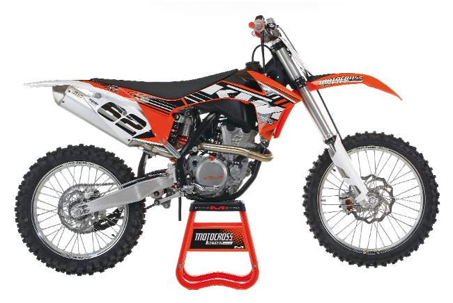
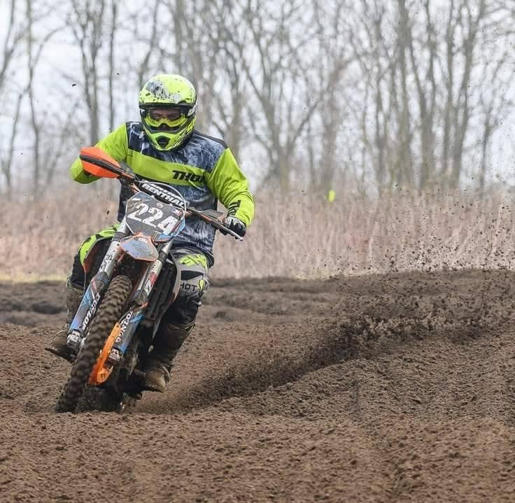

I got to the world of motocross through my older brother, he was always a big fan of motorbikes, so I became a fan too next to him. I bought for myself my first motorbike when i was 21 years old, it was a KTM SX-F 350 i still have that bike and a still really really love it, here is a photo of the bike:
Exactly with this type of motorbike Tony Cairoli has won multiple World Championship titles on MXGP.
Here's a photo of me riding my bike, it was years ago.
